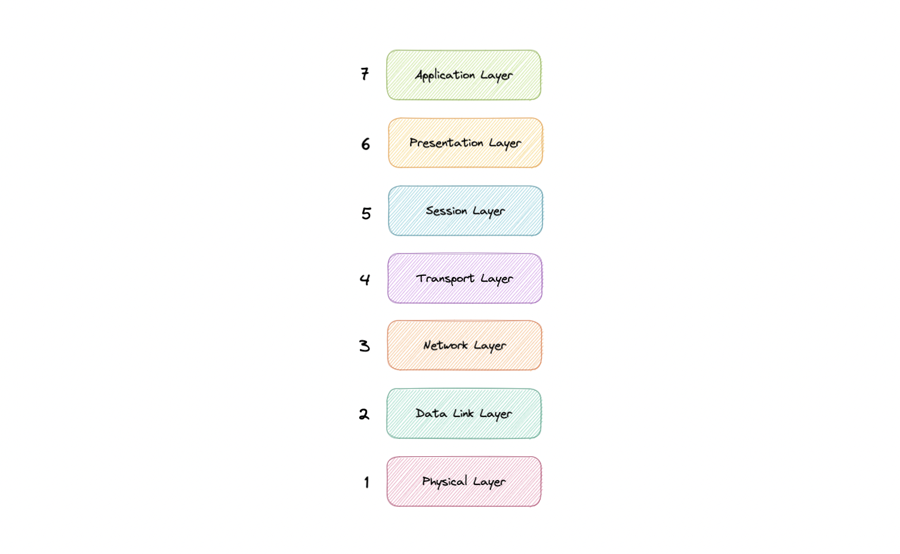
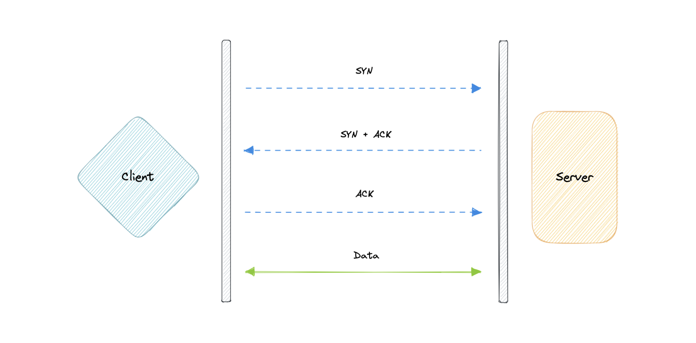
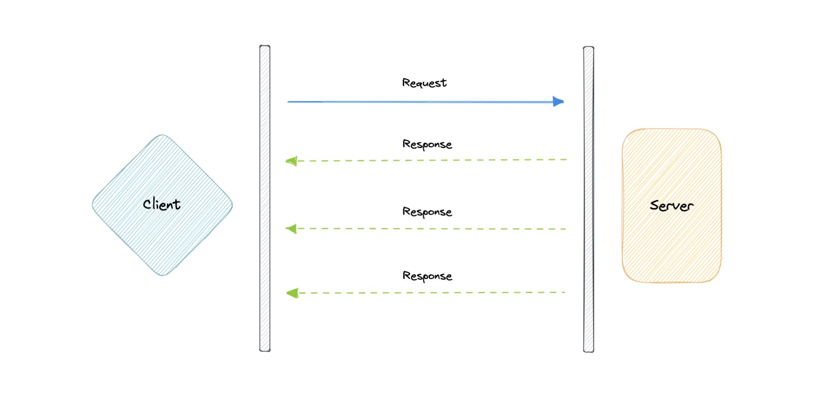
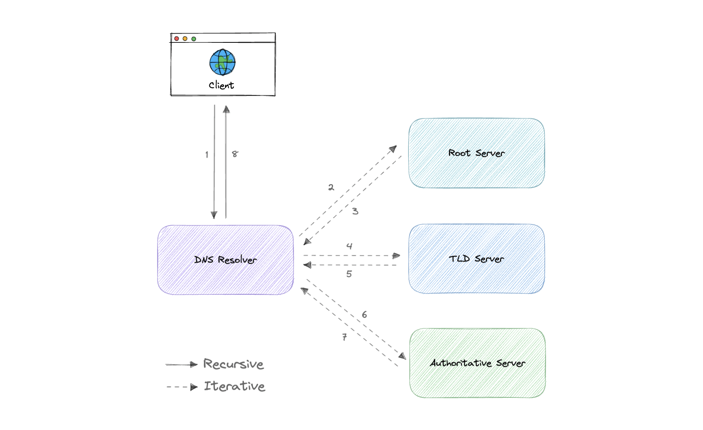

Mạng cơ bản: IP, OSI, TCP/UDP, DNS
Nền tảng networking mà mọi kỹ sư system design cần nắm: địa chỉ IP, mô hình 7 lớp OSI, hai giao thức TCP/UDP, và cách DNS phân giải tên miền.
IP (Internet Protocol)
Địa chỉ IP là định danh duy nhất của một thiết bị trên internet hoặc mạng cục bộ. IP = "Internet Protocol" — bộ quy tắc quy định định dạng dữ liệu gửi qua mạng.
| Phiên bản | Bits | Không gian địa chỉ | Ví dụ |
|---|---|---|---|
| IPv4 | 32-bit | ~4 tỉ địa chỉ | 102.22.192.181 |
| IPv6 | 128-bit | ~340 undecillion (rất lớn) | 2001:0db8:85a3:...:7334 |
Phân loại: Public (ISP cấp cho router, cả mạng chia sẻ) · Private (router gán cho từng thiết bị trong nhà) · Static (cố định, đắt, ổn định — dùng host server) · Dynamic (đổi theo thời gian, do DHCP cấp — phổ biến, rẻ).
Mô hình OSI
OSI (Open System Interconnection) là mô hình khái niệm chia quá trình truyền thông mạng thành 7 lớp trừu tượng, chồng lên nhau. Nó là "ngôn ngữ chung" của networking — giúp troubleshoot, nhận diện mối đe dọa ở từng lớp, và để các nhà sản xuất tạo thiết bị tương thích.

| # | Lớp | Vai trò |
|---|---|---|
| 7 | Application | Lớp duy nhất tương tác trực tiếp với dữ liệu người dùng (HTTP, SMTP). |
| 6 | Presentation | Dịch/định dạng, mã hóa-giải mã, nén dữ liệu. |
| 5 | Session | Mở/đóng phiên giao tiếp, đồng bộ bằng checkpoint. |
| 4 | Transport | Giao tiếp đầu-cuối; chia dữ liệu thành segments. |
| 3 | Network | Truyền giữa 2 mạng khác nhau; chia thành packets; định tuyến (routing). |
| 2 | Data Link | Truyền giữa 2 thiết bị cùng mạng; chia thành frames. |
| 1 | Physical | Thiết bị vật lý (cáp, switch); dữ liệu thành bit stream (1 và 0). |
Segments (L4) → Packets (L3) → Frames (L2) → Bits (L1). Càng xuống thấp, dữ liệu càng được "đóng gói" thành đơn vị nhỏ hơn.
TCP và UDP
Cả hai đều ở lớp Transport (L4) nhưng đánh đổi khác nhau:


| Đặc điểm | TCP | UDP |
|---|---|---|
| Kết nối | Connection-oriented (cần thiết lập kết nối) | Connectionless |
| Đảm bảo giao | ✅ Có (đúng thứ tự, kiểm lỗi) | ❌ Không |
| Truyền lại gói mất | ✅ Có | ❌ Không |
| Tốc độ | Chậm hơn | Nhanh hơn |
| Broadcast | Không hỗ trợ | Hỗ trợ |
| Use cases | HTTPS, HTTP, SMTP, FTP... | Video streaming, DNS, VoIP... |
Khi cần độ trễ thấp nhất và "dữ liệu đến muộn còn tệ hơn mất dữ liệu" (vd gọi video, game real-time). TCP cho độ tin cậy nhưng cơ chế phản hồi tạo overhead → tốn băng thông hơn.
DNS (Domain Name System)
Con người thích tên (google.com) hơn số (122.250.192.232). DNS là hệ thống phân cấp & phi tập trung dịch tên miền sang địa chỉ IP.
DNS hoạt động thế nào (8 bước)

Bốn loại server chính:
- DNS Resolver (recursive resolver): trạm đầu tiên, trung gian giữa client và nameserver; trả lời từ cache hoặc đi hỏi root → TLD → authoritative.
- Root Server: định hướng tới TLD theo phần mở rộng (.com/.net...). Có 13 loại root nameserver, do ICANN quản lý, dùng Anycast routing.
- TLD Nameserver: giữ thông tin các domain cùng đuôi; do IANA quản lý.
- Authoritative Server: trạm cuối, chứa thông tin cụ thể của domain; trả IP từ bản ghi A (hoặc trả NXDOMAIN nếu không tìm thấy).
Các loại bản ghi (record) thường gặp
| Record | Công dụng |
|---|---|
A | Trỏ domain tới địa chỉ IPv4. |
AAAA | Trỏ tới địa chỉ IPv6. |
CNAME | Bí danh (alias) trỏ domain này sang domain khác (không phải IP). |
MX | Trỏ mail tới mail server. |
TXT | Ghi chú text, thường dùng cho bảo mật email. |
NS | Khai báo name server cho domain. |
DNS Caching: mỗi record có TTL (time-to-live, giây) — được cache lại để tra cứu nhanh; hết TTL thì xóa và phân giải lại. Reverse DNS dùng bản ghi PTR để tra tên miền từ IP (mail server hay dùng để chống spam).
Ví dụ dịch vụ DNS quản lý: Route53, Cloudflare DNS, Google Cloud DNS, Azure DNS.
IP định danh thiết bị (IPv4 32-bit/IPv6 128-bit). OSI 7 lớp chia nhỏ quá trình truyền thông. TCP đáng tin (web, file), UDP nhanh (streaming, DNS). DNS dịch tên → IP qua Resolver → Root → TLD → Authoritative, có cache theo TTL.